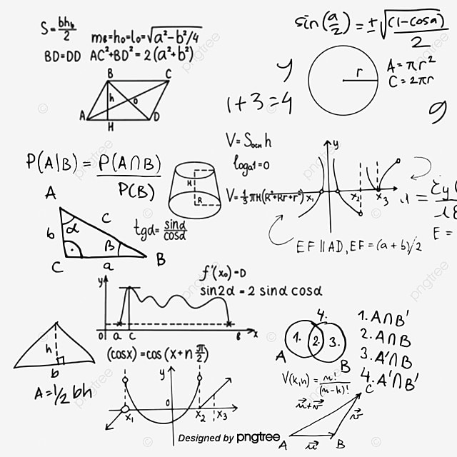

Calculo Integral
Funciones
Concepto General
Una función es una relación o correspondencia entre dos magnitudes, de manera que a cada valor de la primera le corresponde un único valor de la segunda (o ninguno), que llamamos imagen o transformado. A la función se le suele designar por f y a la imagen por f(x), siendo x la variable independiente.

